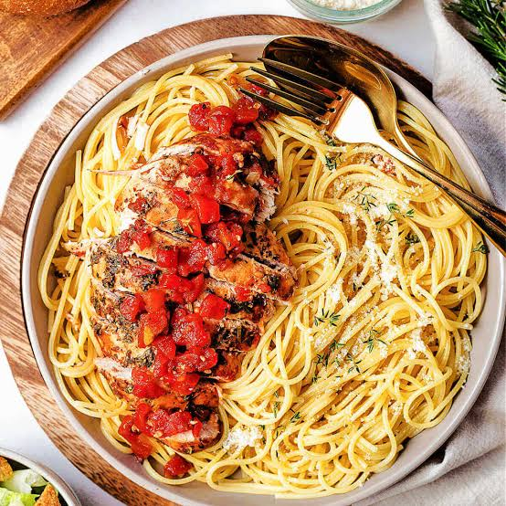

Balsamic Chicken and Pasta
Back to Homepage

Balsamic Chicken and pasta is a dish that My wife made up. We made balsamic chicken before and decided to pair it with pasta. The rest of this is just
filler words to make the description longer and take up more space. This is all to show I can program in HTML and not actually to make a recipe website.
If i want to I will come back and improve on this.
Ingredients
- Chicken
- Balsamic Vinegar
- Honey
- Garlic
- Olive Oil
- Salt & Pepper
- Fresh Gluten Free Fettuccine
- Butter
- Parmesan
Steps
- Put Chicken, Balsamic Vinegar, Honey, Garlic, and Salt & Pepper in a bowl and let it sit for 30 Minutes
- Cook Chicken in olive oil in a skillet with some of the sauce
- In a sauce pan put balsamic vinegar, honey, garlic, and Salt & Pepper. Bring to a boil and simmer for 10 min
- Cook pasta and toss in b=utter, garlic, parmesan, and Salt & pepper.
- Pour sauce over cooked chicken.